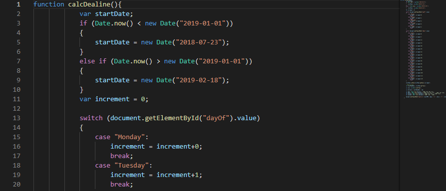
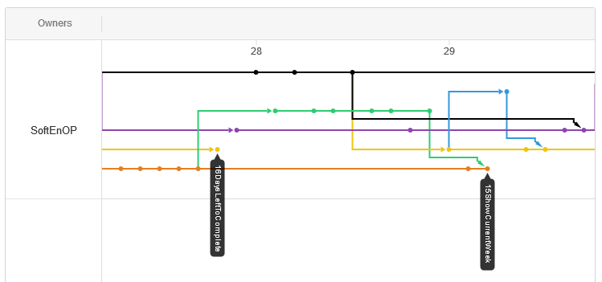
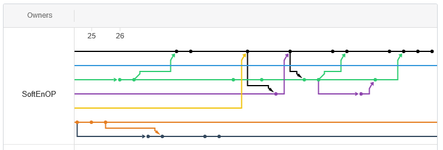
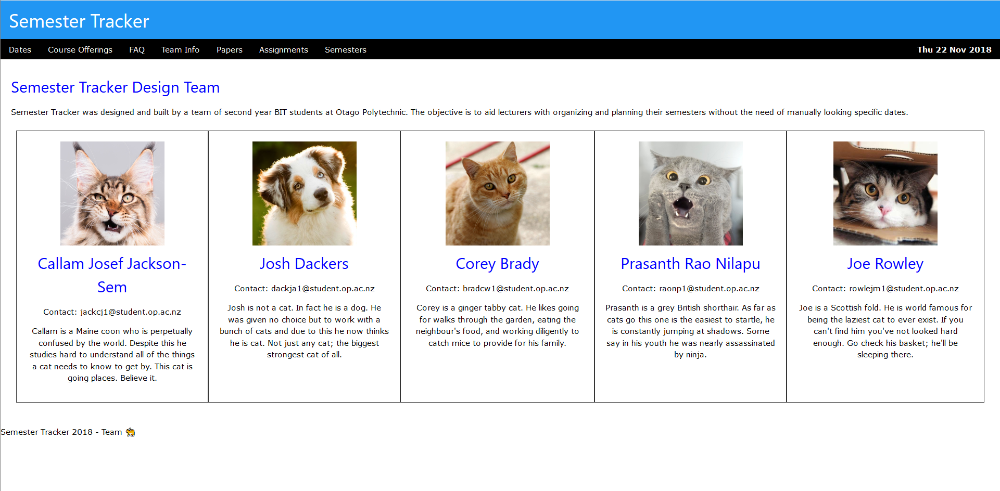
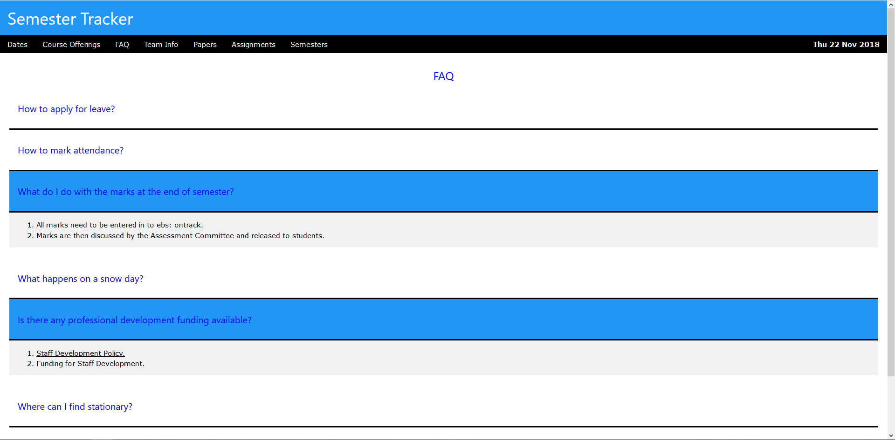
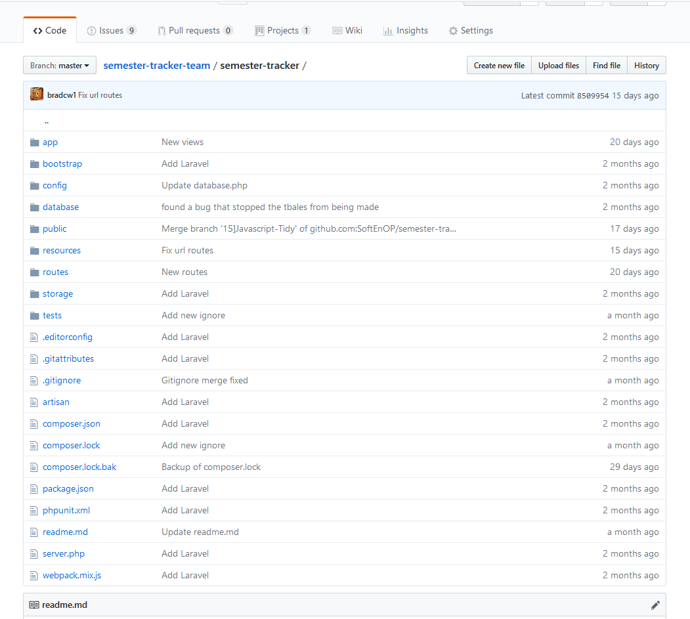

Technical Proficiency
Over the course of the semester there were several new technologies introduced that I had used either very little of or had never used. These included JavaScript, Git, and Laravel.
Early in the project I had to code a countdown to a date that was specified by the user. This was ticket #16: Days left to complete Exam. Prior to this I had never coded anything in JavaScript. I used w3schools to get up to speed with JavaScript. I used their count down app tutorial as a basis to work off. The biggest challenge here was figuring out how to take user input and turn that into a Date variable that was usable in the code. Once I had the day the user wanted, I discovered that I could add a one to four to the start of the semester date to get to the day of the week the user wanted and then add a multiple of seven to get to the week of the semester that was desired.
JavaScript Solution
At the beginning of the project I had only used Git a very small amount. Learning the Git workflow was not too difficult although there were a few issues with how our team used Git early on. Knowing how to deal with merge conflicts early on was something I and the rest of my team found difficult. Our first pull request was a disaster, and we ended up copying code into master rather than merging with master. Once that sprint was over, I spoke to the team and we all agreed that our branching and merging was a mess. To overcome this, I made sure that I was involved with all pull requests in some capacity to ensure that all merges went smoothly, and that no one took any strange shortcuts, such as what had happened previously. Another aspect of this was making sure branching was being used effectively. Due to the group not knowing how to properly do a pull request early on, we had a few dead-end branches. Going forward after that I made sure that branches merged back into master once the branch feature was functional.
Bad Branching
Good Branching
During Sprint 3 the Laravel framework was introduced in ticket #23: Laravel Framework. This was the largest challenge that I faced during the entire semester. The entirety of this sprint was getting the group up to speed with how Laravel works and how it integrates with the work we had completed already.
The largest roadblock I had with Laravel was implementing the ability to add an assignment to the database and display all assignments to the user. This was ticket #26: Store Assignment Dates & ticket #10: Due Dates. I had to go back through Laravel tutorials and read documentation to figure it out. I came up against a dozen errors and made note of how to fix each one because I knew Corey and Josh were working on very similar tasks at the same time and they could use the help.
The process of getting this set up in Laravel first involved creating a new model and migration from the command line. The second step was setting up the naming of each of the database fields correctly. After the database was creating correctly, I had to set up the routing so that the buttons would lead to the right places. Once that was done all that was left was to copy the body of the tutorial code and rename all appropriate fields so that they would work with our database. I feel that we struggled with this more than some of the other groups. Despite the struggle, this is the thing I am most proud of accomplishing because it felt like a huge challenge for me personally and being able to help my team mates through very similar tasks was extremely rewarding.
The earliest ticket I was assigned was #4: Team Information. This involved writing up bios for each team member so that the user had some sort of understanding of those that made the tool. I asked my team mates what they thought I should write about them, but I didn’t get any helpful feedback. I designed a basic team info page with cat profile pictures to go with our team’s cat theme. This involved some minimal inline CSS as we did not have a finalised CSS file at that point. My team mates as well as the client expressed that they liked the approach that I took with the info page.
Team Info Page
During the end of one of our sprints we received some feedback from the client that there was too much scrolling in our site and that it should be minimised. As a result of this I was assigned ticket #20: Compress FAQ Page. I decided to make each FAQ topic collapsible as this would save a lot of screen space. I followed along with a w3schools tutorial on making elements collapsible. This involved a combination of HTML buttons, some CSS, and a small portion of JavaScript.
Collapsible FAQ Page
Sprint 4 involved getting our site running on a server. This was assigned in ticket #29: Running on a server. To initially get it on a server several of the group members worked together so that we all understood how it all works.
The first thing that was setting up the database on mariadb and then cloning our repository onto the live server. As a group we struggled with this initially as we collectively misunderstood several of the steps. It wasn’t until the following week that a better grasp of it all fell into place. After that initial sprint Corey became the teams ‘Systems Admin’ and handled deploying the latest version of the software.
From the very beginning of the semester our project has been version controlled using Git. I am very confident in my ability to use Git now compared to the start of the project. Initially I had to make sure I was adding to be committed only the files I had been working on, as prior to this course I had used “*” to add everything to a commit.
Version Controlled Git
The feature that made the biggest impact on the way I used Git was branching. Anytime I was working on a new feature I would start a new branch and work there until I was finished and ready to merge back to master. The first pull requests that my team and I dealt with did not go well, and I kept a closer eye on all pull requests following to make sure everything is being used correctly.
There were several moments where a team member or myself had made some unfortune changes that they wanted to discard and roll back to before they began working. This led to learning about resetting the head on a branch.